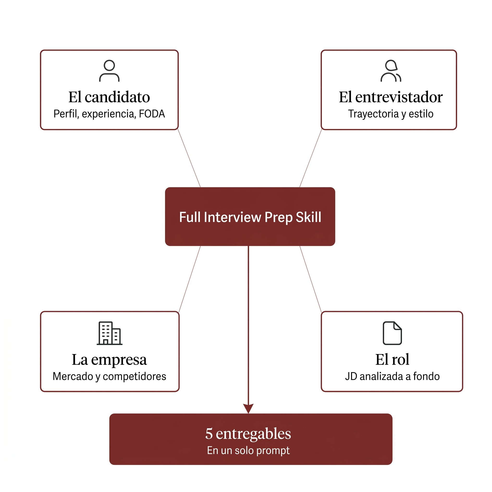

Skill open source para Claude
Llegá mejor preparado a tu próxima entrevista de trabajo.
Cuando estás buscando trabajo, las entrevistas te agarran corto de tiempo. Esta skill genera un informe ad hoc en 3 minutos por entrevista. Para que llegues con todo.
01 · El problema
Si estás buscando trabajo, esto te va a sonar.
Estás trabajando full-time con mil cosas — proyectos en marcha, vida personal, familia. Y en paralelo te aparece una entrevista para algo que te interesa. Se agenda rápido. No tenés tiempo para sentarte tres horas a investigar la empresa, repensar tus historias, anticipar las preguntas duras, leer el perfil del entrevistador.
Llegás improvisando, porque eras vos o no llegabas. La conversación va más o menos bien — pero salís con la sensación de que no diste todo lo que podías. Y la posición se la lleva alguien que se preparó mejor.
Eso es lo que esta skill viene a resolver.
02 · La solución
Cuatro análisis. Cinco entregables. Un solo prompt.

Los cuatro análisis
Tu perfil completo: track record, fortalezas, gaps reconocidos, dirección de carrera y tus patterns bajo presión. Se construye una vez en el onboarding y se reusa en cada entrevista.
Qué busca el rol más allá de la descripción literal: prioridades implícitas, skills críticos vs deseables, señales de cultura.
Investigación profunda de quien te va a entrevistar, con un mínimo de 3 fuentes públicas. Si no hay huella digital, se declara.
Análisis ejecutivo, filtrado al mercado, región o unidad donde está el rol. Con una sección sobre cómo la IA está afectando al sector.
Los cinco entregables
El cruce entre tu perfil y el puesto. Tus 3 fortalezas más fuertes y los 3-5 gaps reales que te van a cuestionar.
Las preguntas más probables que te van a hacer, con borradores de respuesta estructurados (formato STAR).
Para cada gap, una pregunta hostil calibrada al estilo del entrevistador, la respuesta defensiva que probablemente vas a dar bajo presión, y un frame mental para defenderte.
Las preguntas inteligentes que tenés que hacerle vos al final. Calibradas al perfil del entrevistador y al momento del proceso.
Un resumen para leer 10 minutos antes de entrar. Lo esencial del framework en una sola hoja.
03 · Cómo se usa
Tres pasos. Después, un solo prompt por entrevista.
45 minutos la primera vez. 3 minutos por entrevista después. Bajás al mínimo el tiempo de research y enfocás todo en pensar, practicar y aprender de la empresa para ver si hay fit real.
Descargá el ZIP desde el repo en GitHub y subilo en Claude.ai → Customize → Skills.
La primera vez, decile a Claude "Hagamos el onboarding" y dedicá 45-60 minutos a construir tu perfil. Es una conversación, no un formulario. Recomendable usar modo audio para que las historias y patterns salgan más naturales. Al final, Claude te entrega tu archivo de perfil para reusar.
Le pasás los inputs en un solo mensaje (link de la JD, nombre y LinkedIn del entrevistador, mercado o región, etapa del proceso). La skill te entrega los .docx con todo el prep listo.
04 · Quién la armó
Quién la armó.
Soy Martín Bellocq. Empecé a entrevistar en Google Argentina (2012-2017), donde aprendí que entrevistar bien era un método, no una intuición. Lo escalé después en Ualá, durante mis 8 años como CMO Regional (2017-2025) — entrevistando a más de 150 personas (analistas, líderes, managers y directores regionales en Argentina, México y Colombia) mientras construía un equipo de marketing que creció de 0 a 80 personas.
La skill nace de cruzar lo que aprendí del lado del entrevistador con la preparación de mis propias entrevistas más recientes. Las guías que encontré no cubrían las 4 dimensiones al nivel que necesitaba, así que armé un framework propio. Lo probé varias veces hasta que funcionó y lo convertí en una skill open source de Claude.
Algo que vi en esas entrevistas: la diferencia entre alguien preparado y alguien que no lo está es enorme, y se nota desde los primeros minutos. La preparación también es predictor de cómo va a hacer el trabajo. Sé auténtico, decí la verdad — pero andá preparado. Si querés que te contraten, prepará la entrevista.
05 · Para quién es ideal
Para quién es ideal. Y cuándo no rinde tanto.
La skill es ideal si…
- La entrevista que tenés enfrente importa: cambio de empresa, salto de seniority, rol que define los próximos años.
- Estás en una búsqueda activa y vas a tener varias entrevistas en los próximos meses.
- Tenés experiencia acumulada. Desde team leader para arriba es donde más le saca jugo.
- Aceptás dedicarle una hora la primera vez para cargar tu perfil bien.
La skill no es tan potente cuando…
- Querés saltar el onboarding. Sin perfil bien cargado, la skill se queda sin nafta.
- Tenés una sola entrevista por delante y el rol no te termina de interesar. La inversión inicial no vale la pena para algo que tampoco te importa demasiado.
- Estás empezando tu carrera y todavía no tenés volumen para alimentar el fit-gap y el sparring (otras partes te van a servir igual).
- Buscás respuestas literales para memorizar. La skill identifica gaps de contenido, no los rellena por vos.
En cualquiera de estos casos la skill sigue funcionando; solo que no despliega todo su potencial.
06 · Lo que no es
Lo que no es.
No es coaching de carrera.
Prepara una entrevista específica una vez que decidiste aplicar. No te ayuda a decidir si te conviene el rol, si es el momento de cambiar, o si es la empresa correcta.
No te genera respuestas listas para memorizar.
Identifica gaps de contenido, te entrena a anticipar preguntas y te da frames mentales para defenderte. Pero las respuestas las construís vos.
No es para entrevistas de coding técnico.
Si vas a un proceso con leetcode, system design o pair programming, esta skill no aplica. Está pensada para entrevistas de fit, comportamiento y ejecutivas.
No practica con vos en voz alta.
Te entrega el material para hacerlo (preguntas, ataques, frames). Pero la práctica oral con un amigo, coach o frente al espejo, esa parte la tenés que hacer vos.
07 · Preguntas frecuentes
Preguntas frecuentes.
¿Tiene costo?
No. La skill es gratis y open source bajo licencia MIT. Lo único que podés pagar es Claude, si querés un plan superior al gratuito — pero eso es decisión tuya y no es necesario para usarla.
¿Qué plan de Claude necesito?
Funciona desde el plan gratuito. Si tenés Pro o superior, vas a poder usar Projects, que te permite tener tu perfil siempre cargado para que cada chat de prep arranque con todo el contexto disponible automáticamente. Sin Projects también se puede, pero tenés que adjuntar tu perfil como archivo en cada chat nuevo.
¿Necesito saber programar o de IA para usarla?
No. La instalación es subir un ZIP a Claude.ai como cualquier archivo. Toda la interacción es por escrito o por audio, como si chatearas con alguien. No hace falta saber código ni tener experiencia previa con herramientas de IA.
¿Qué pasa con mis datos?
Lo que cargás va a Claude y queda en tu cuenta. La skill no tiene backend propio ni manda datos a ningún servidor externo: tu perfil, tus inputs y los outputs viven en tus chats y archivos de Claude. Si querés saber qué hace Claude con eso, está en sus políticas (la skill no agrega ni cambia nada).
¿Por qué la publicaste gratis?
La armé para preparar mis propias entrevistas. Una vez que funcionaba bien, me pareció más interesante liberarla open source que tenerla guardada. Es un experimento: quiero ver si a otros les sirve la misma lógica que me sirvió a mí.
¿Puedo contribuir o sugerir mejoras?
Sí. Si la usás y encontrás cosas que faltan, frameworks que iterarías, o casos donde el sparring no acertó al gap real, abrí un issue o un PR en GitHub. Es especialmente útil documentar casos donde no funcionó — eso es lo que permite iterar la lógica.